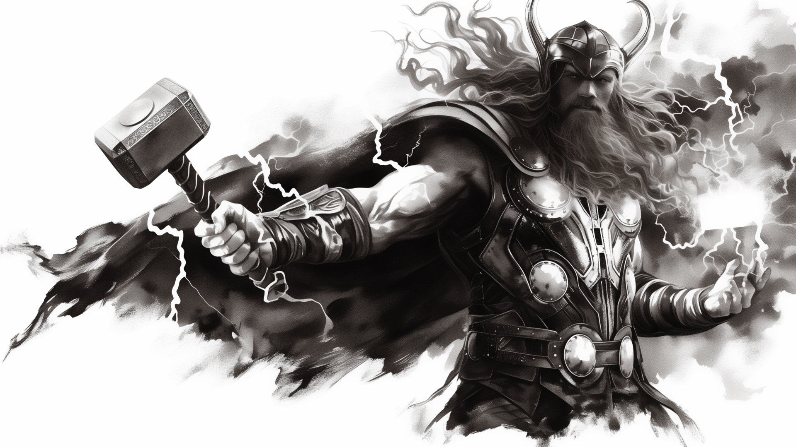
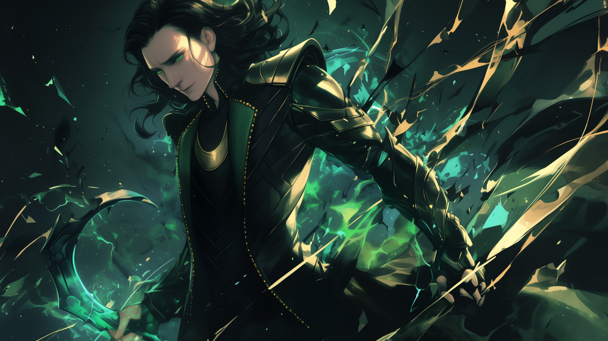
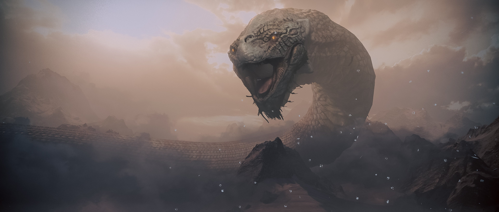
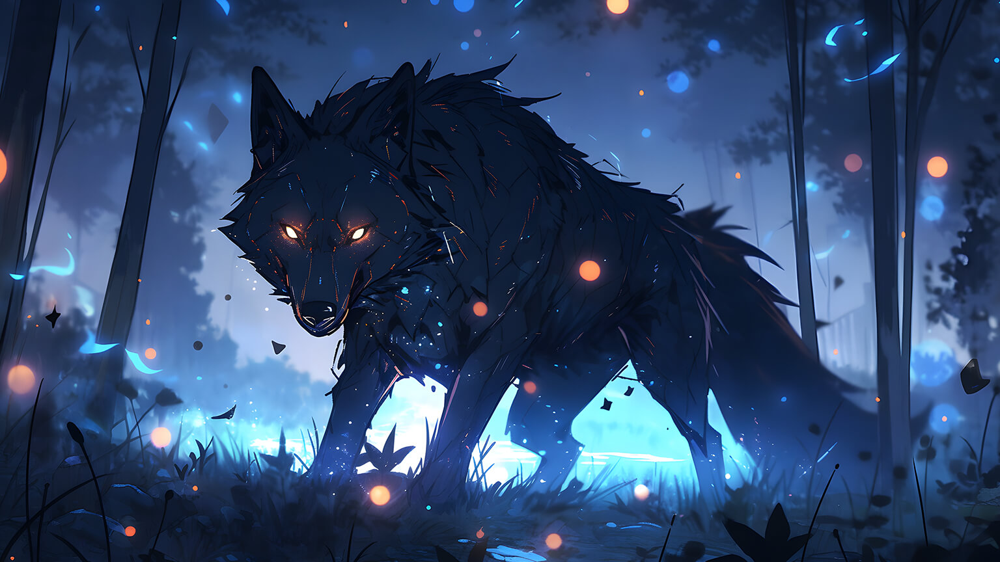
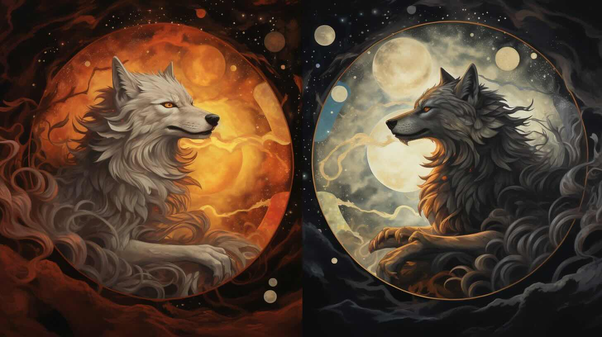
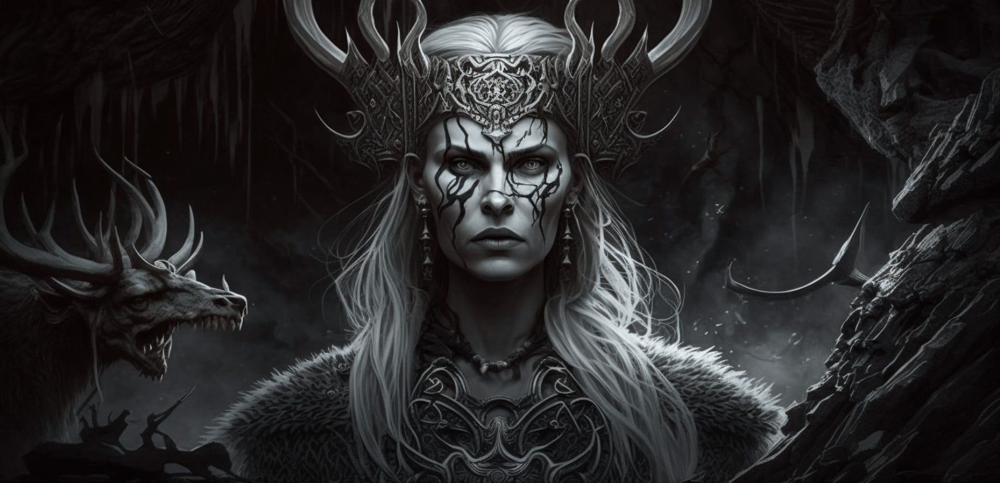
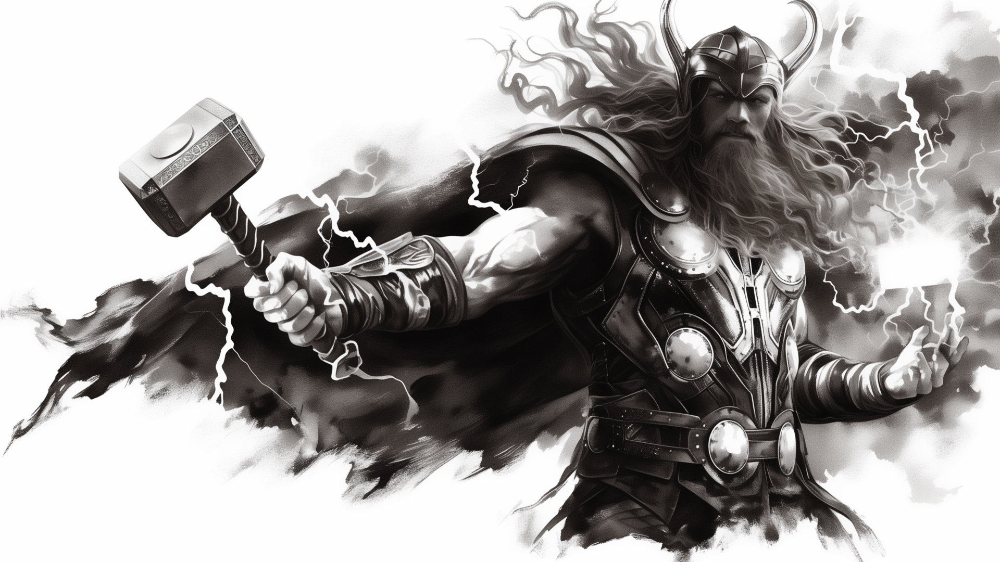
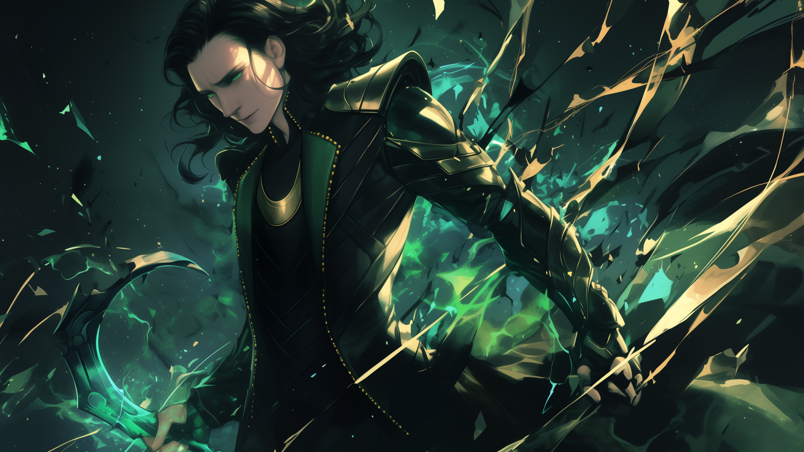
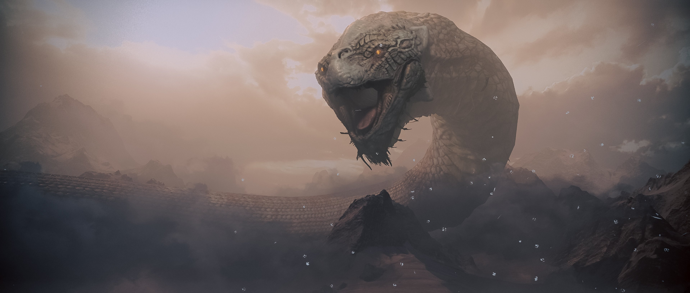
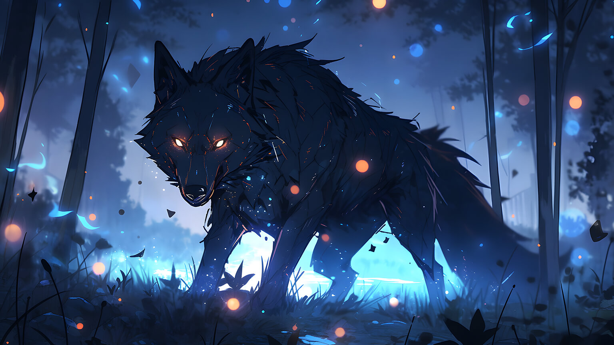
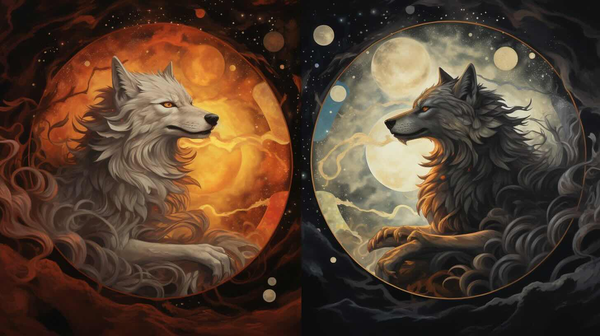
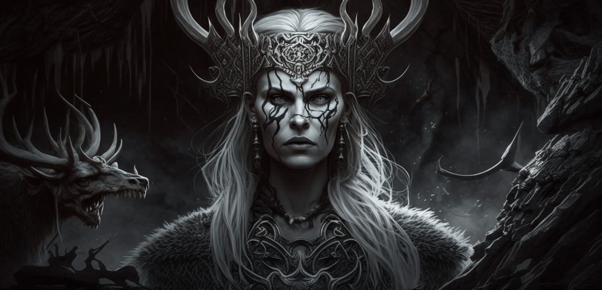
Yggdrasil
A Yggdrasil é considerada a árvore da vida na mitologia nórdica. No meio de Asgard, onde vivem os Deuses e deusas, é Yggdrasil. Yggdrasil, a árvore da vida, é uma eterna árvore de cinzas verdes; os ramos se estendem sobre todos os nove mundos na mitologia nórdica, e se estendem acima e acima dos céus. Yggdrasil é carregado por três raízes enormes, a primeira raiz de Yggdrasil está em Asgard, o lar dos deuses. Ao lado desta raiz é bem conhecido o bem de Urd. É aqui que os deuses têm suas reuniões diárias.
Odin
Odin foi uma divindade presente na religiosidade e nos mitos nórdicos, sendo o mais poderoso entre os deuses nórdicos e nomeado o Pai de Todos. Era o representante da poesia, da morte, da guerra, das runas, da vitória e do êxtase, e estava presente na religiosidade de outros povos do norte da Europa.
Thor
Thor era uma divindade da mitologia nórdica e reconhecido como o deus do trovão, das tempestades e da agricultura. Originário da cultura germânica, é reconhecido pelos historiadores como o deus mais popular entre os nórdicos da Era Viking. Filho de Odin, era tido como o mais poderoso do panteão nórdico.
Loki
Loki: deus da trapaça (mitologia nórdica) Loki é o deus da mitologia nórdica associado à trapaça, travessuras e magia. Figura complexa e multifacetada, é filho dos gigantes Laufey e Farbauti, mas vive em Asgard, o reino divino, na companhia do principal clã de deuses nórdicos, os Aesir.
Jormungandr
Jormungandr, também conhecido como a Serpente de Midgard, é uma criatura lendária da mitologia nórdica. Este monstro é frequentemente descrito como uma enorme serpente que vive no oceano que circunda Midgard, a terra dos humanos. O nome Jormungandr significa “a Serpente de Midgard” em nórdico antigo. Esta criatura é uma das três crianças do deus Loki e da gigante Angrboda, os outros dois sendo o lobo Fenrir e a deusa Hel.
Fenrir
Fenrir é um Personagem da Mitologia Nórdica. Filho de Loki e de uma gigante, é um lobo de proporções colossais, que apesar de alimentar-se de carne crua e ter uma pelagem densa e cinzenta, fala e pensa como humano. Foi alimentado e criado pelo deus Tyr, a quem confiava plenamente.
Skoll e Hati
Na mitologia nórdica, Skoll (ou Sköll, "Treachery" em nórdico antigo) é um lobo que persegue os cavalos Arvak e Alsvid, os quais puxam carruagem Alfrodul que carrega a deusa Sól tentando comê-la. Skoll tinha um irmão, chamado Hati, que caçava a lua. Ambos são filhos de Fenrir e netos de Loki.
Hela ou Hel
Na mitologia nórdica, Hela (Hel ou Hell) é a deusa do Reino dos Mortos, igualmente designado por Hel. É filha de Loki e da gigante Angrboda, irmã mais nova de Fenrir e da serpente Jörmungund, do oceano que circunda Midgard.É descrita como uma menina, metade idêntica a Loki com olhos verdes e sorriso irônico, metade como um cadáver em decomposição. Não é nem viva, nem morta.